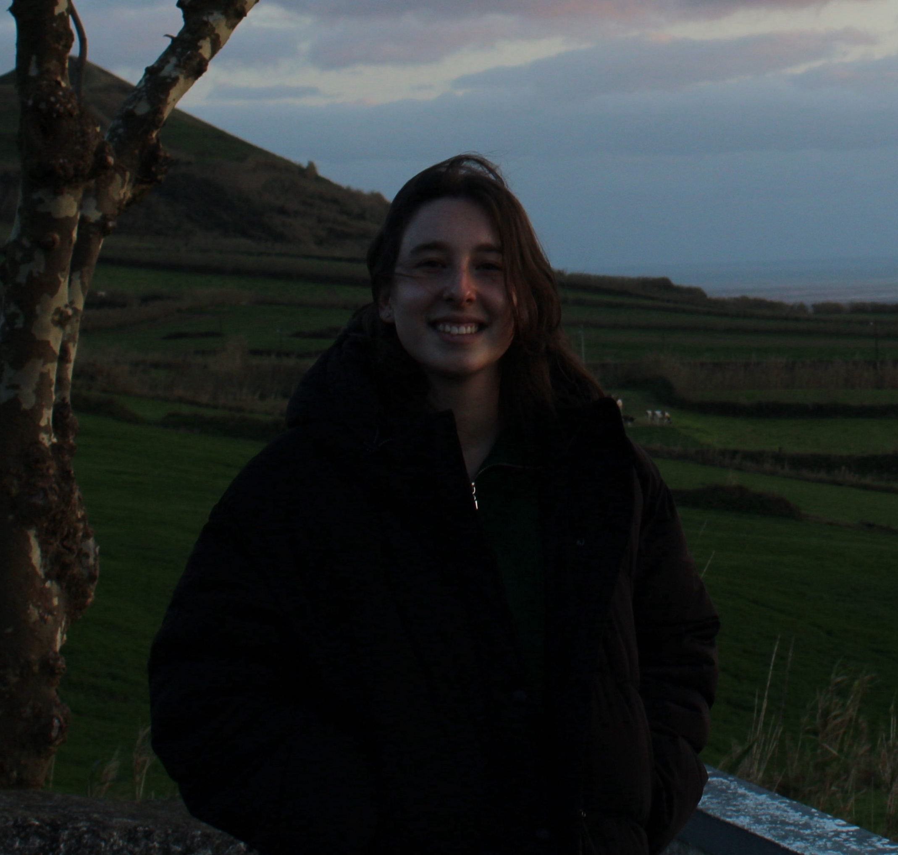

Olá! Chamo-me Filipa Orquídea, tenho 24 anos e vivo na cidade de Santo Tirso.
Completei a minha licenciatura e Mestrado em Design e Multimédia na Universidade de Coimbra.
As minhas áreas de interesse focam-se em web design, tipografia, design gráfico e criatividade computacional.
Desenvolvi skills em design e programação tendo assim experiência em programas da Adobe Creative Suite, em
Front-End (HTML, CSS e JavaScript),
em Processing e P5.js.
Considero-me uma pessoa bastante trabalhadora e que cumpre sempre os objetivos,
organizada e sempre motivada para melhorar o meu trabalho e desenvolver novas capacidades.